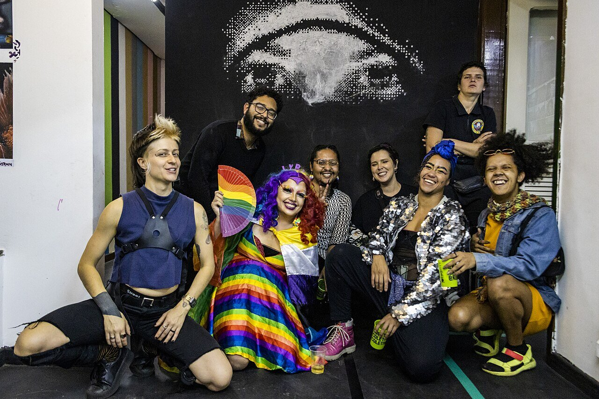

Changelog recente
Histórico completo no GitHubRelease notes are maintained in Portuguese.
Carregando changelog...
Projeto Vox
Assistente gratuito e anônimo para tirar dúvidas sobre direitos, saúde e acolhimento LGBTQIA+ no Brasil. Código aberto, feito em Salvador (BA).
100% gratuito · Sem cadastro (LGPD) · Texto e voz · Código aberto

Sobre o projeto
O Vox AI nasceu em 2025 como projeto de extensão na disciplina Tecnologias e Inteligências Artificiais da Universidade Católica do Salvador (UCSAL), com o objetivo de facilitar o acesso a informações confiáveis sobre direitos, saúde e acolhimento para a comunidade LGBTQIA+ em Salvador (BA).
Encerrada a disciplina, o projeto continuou em desenvolvimento de forma independente, gratuita e open source, mantido sem financiamento institucional, com base de conhecimento verificada e escuta de iniciativas locais como a Casa Marielle Franco.
Leis, retificação de nome e proteção contra discriminação.
SUS, prevenção (PrEP/PEP), hormonioterapia e saúde mental.
Casas de acolhida, centros de referência e canais seguros.
História do movimento, representatividade e educação inclusiva.
Instituição de acolhimento independente em Salvador, coordenada por Sandra Muñoz. Entrevistas e uma visita presencial em 2025 orientaram a linguagem, o acolhimento e os recursos de acessibilidade do Vox AI.
Idealizador e manutenção
Desenvolvimento (contribuições)
Equipe inicial do projeto de extensão (UCSAL, 2025.1)
Transparência
Temas verificados na base de conhecimento do assistente. Assuntos com cobertura inicial ficam recolhidos e abertos a sugestões da comunidade.
Carregando estatísticas da base...
Código aberto
O código e a curadoria do Vox AI são abertos. Você pode ajudar corrigindo bugs, melhorando a documentação, traduzindo ou sugerindo novos temas para a base de conhecimento.
Atualizações
Release notes are maintained in Portuguese.
Carregando changelog...
Última atualização registrada na base verificada.
Quer testar o assistente agora?
Acessar o Vox AI